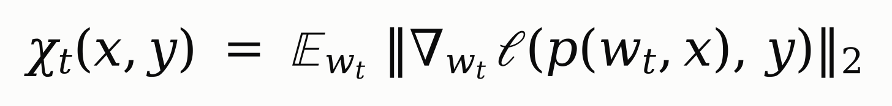
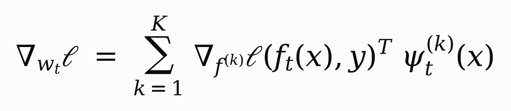
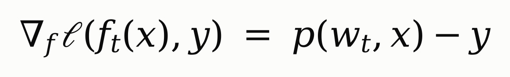
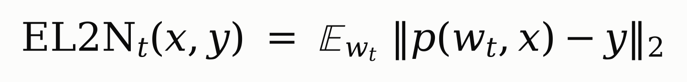
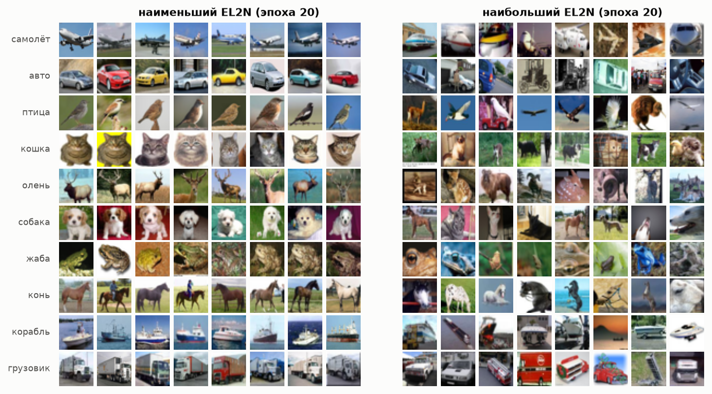
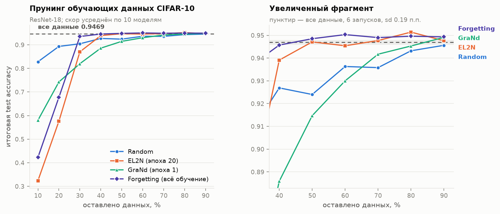
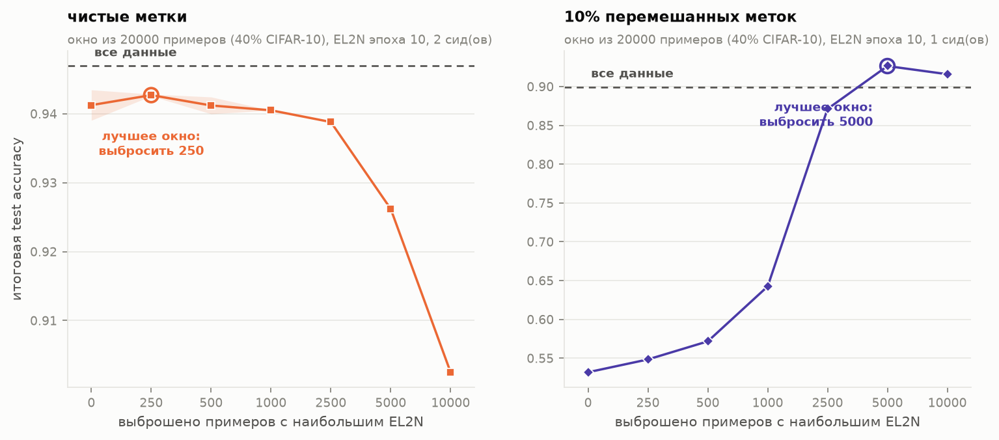
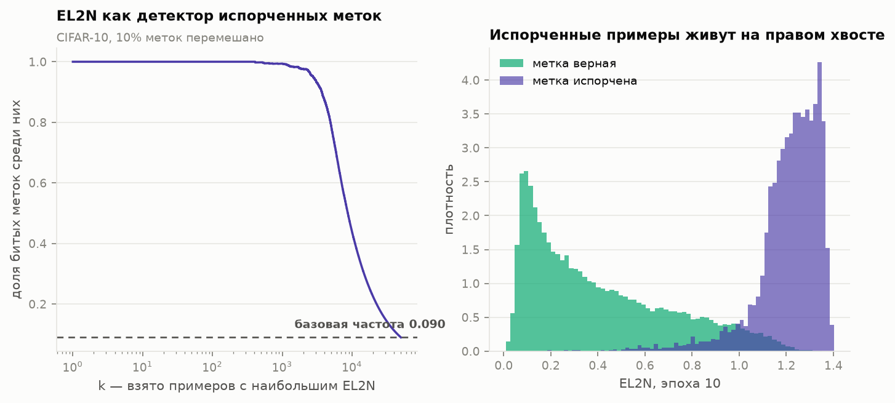

Можно ли ещё до основного обучения понять, какие примеры обучающей выборки нужны, а какие можно выбросить?
Мотивация
Данные избыточны, но какие именно?
Качество растёт с объёмом данных, но не все примеры одинаково полезны: многие сеть выучивает за пару эпох и больше на них не ошибается.
Известный способ найти «бесполезные» примеры — forgetting score (Toneva et al., 2019): сколько раз пример был выучен, а потом забыт. Но его нужно считать по всему обучению.
Если ради отбора данных нужно сначала полностью обучиться — выигрыша мало.
Вопрос статьи: есть ли скор, который посчитан в самом начале обучения (или вообще при инициализации), а работает не хуже forgetting?
Постановка
Протокол прунинга данных
1. СкорДля каждого примера считаем «важность» на рано остановленных моделях
→
2. СортировкаРанжируем все 50 000 примеров CIFAR-10 по скору
→
3. ОтборОставляем k% примеров с наибольшим скором
→
4. ОбучениеНовую сеть учим с нуля только на этом подмножестве
Качество оцениваем по test accuracy и сравниваем с обучением на всех данных и со случайным подмножеством той же доли.
Деталь: число шагов SGD одинаково при любой доле — на подмножестве каждый пример просто видится чаще.
Скор 1
GraNd: насколько сильно пример двигает веса

Идея: за один шаг SGD изменение лосса на любом другом примере ограничено сверху суммой норм градиентов обучающих примеров. Пример с маленьким градиентом почти ни на что не влияет — его можно убрать.
Математическое ожидание — по случайной инициализации весов: на практике среднее по нескольким независимым сетям.
Считается уже при инициализации или через несколько эпох. Минус — нужны per-sample градиенты по всем параметрам, это дорого.
Скор 2
EL2N: та же идея, но за один прямой проход
Градиент по весам раскладывается через логиты (ψ — якобиан логитов по весам):

а для кросс-энтропии градиент по логитам — это просто ошибка предсказания:

Если якобианы ψ у разных примеров похожи, норму градиента определяет ошибка p − y. Отсюда:

EL2N = насколько далеко предсказание от правильной метки. Один forward-проход, в ~14 раз дешевле GraNd.
Два ключевых условия
Рано — но не слишком, и по нескольким сетям
~10–20 эпох
из 200 — достаточно
EL2N, посчитанный уже через несколько эпох, ранжирует примеры почти так же хорошо, как forgetting по всему обучению. В самом конце обучения скор вырождается: сеть выучивает трейн и ошибка у всех ≈ 0.
~10 сетей
усреднение по инициализациям
Рейтинг от одной сети шумный: у двух независимых ResNet-18 ранговая корреляция EL2N всего ≈ 0.6. Среднее по нескольким сетям даёт устойчивый рейтинг.
Итоговая стоимость отбора: несколько коротких обучений. Это заметно меньше, чем одно полное, — и меньше, чем нужно для forgetting.
Интуиция
Какие примеры скор считает важными

Слева — «скучные» типичные примеры: сеть выучивает их сразу, они дублируют друг друга. Справа — нетипичные ракурсы, перекрытия и ошибки разметки.
Главный результат
Половину CIFAR-10 можно выбросить без потери качества

EL2N 50% данных: 94.7% — как на всех данных (94.7%), тогда как случайные 50% дают 92.4%. EL2N почти догоняет forgetting, но считается за 20 эпох, а не за всё обучение.
Тонкость
«Только самые сложные» — плохая стратегия
При малой доле данных подмножество из одних сложных примеров не описывает распределение: на 10% данных EL2N даёт 32% против 83% у случайного отбора.
Статья проверяет это скользящим окном: берём фиксированное число примеров, но сначала выбрасываем самые-самые верхние по рейтингу.
Чем меньше оставляем данных, тем больше верхушки выгодно отрезать.

Важное — не «самое сложное», а «сложное, но выучиваемое». Самая верхушка рейтинга — это часто шум.
Шум в метках
Верхушка рейтинга — это битые метки

Перемешаем 10% меток CIFAR-10. Испорченные примеры получают самый высокий EL2N: среди тысячи верхних 99% — с битой меткой.
Наивный прунинг «оставить верхушку» здесь оставляет мусор и проигрывает случайному.
Но если отрезать верхушку, ~40% данных дают больше, чем все шумные данные.
Тот же скор — бесплатный детектор ошибок разметки. Прунинг при шуме не просто экономит данные, а улучшает качество.
Почему это работает
Связь с динамикой обучения
В начале обучения сеть быстро меняется, потом траектория стабилизируется. Статья показывает, что EL2N становится хорошим скором примерно тогда же, когда обучение стабилизируется.
Через призму NTK (ядро, задаваемое якобианом сети): примеры с высоким скором сильнее всего вносят вклад в то, как быстро меняется ядро (kernel velocity). Примеры с низким скором на геометрию обучения почти не влияют.
Значит, важность примера определяется на ранней фазе — дальше уже видно, какие примеры будут «двигать» обучение.
Простые примеры сеть выучивает сразу и потом их «не слышит». Обучение формируют сложные, но корректные примеры.
Ограничения
Где метод не бесплатный
Стоимость скоринга
Нужно несколько коротких обучений. Окупается, если подмножество потом используется много раз: подбор гиперпараметров, архитектур, повторные обучения.
Зависит от датасета
CIFAR-10 сильно избыточен. На более сложных данных (CIFAR-100) безопасно убирается заметно меньшая доля, а при агрессивном прунинге скор уже хуже случайного.
Шум и малые доли
Оставлять верхушку рейтинга опасно: при шуме и малой доле данных нужно отрезать самые сложные примеры, а сколько — подбирать отдельно.
В протоколе статьи число шагов фиксировано, то есть экономится не время обучения, а данные. Статья показывает, что информация в выборке сильно избыточна, и даёт дешёвый способ её измерить.
Итог
Что унести из статьи
Важность примера = величина его градиента (GraNd), а на практике — ошибка предсказания (EL2N).
Скор можно посчитать рано (10–20 эпох), но обязательно усреднить по нескольким сетям.
По EL2N можно выбросить 50% CIFAR-10 без потери точности; случайный отбор так не умеет.
Самые сложные примеры — часто шум: при малой доле данных и битых метках их нужно отрезать.
Воспроизведение на PyTorch и все эксперименты — в отчёте report/REPORT.md.